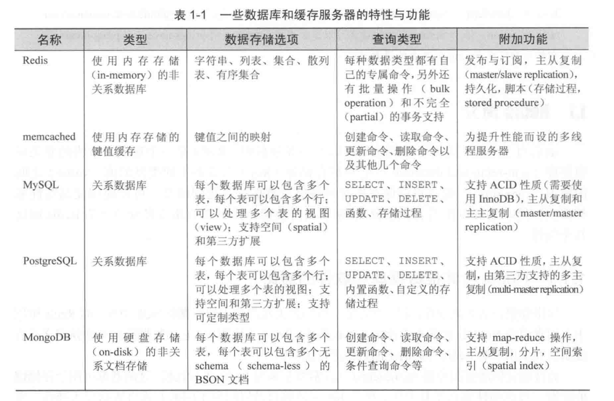
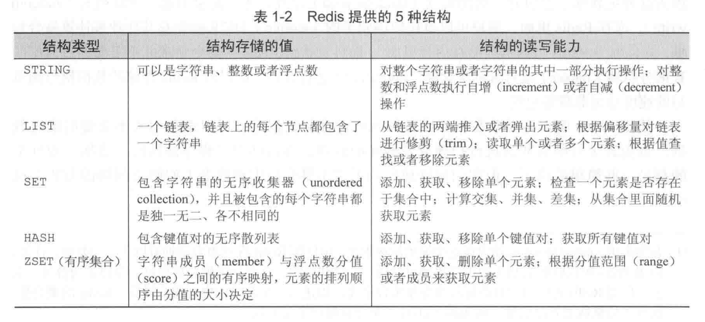

又有好久没更新博客啦，罪过啊～罪过～
对缓存这块一直云里雾里，确有学习Redis的必要，故有此笔记。
1.1 Redis 简介
关于 Redis ：
- Redis 是一个速度非常快的非关系数据库（non-relational database）
- 可以存储键（key）与 5 种不同类型的值 (value) 之间的映射
- 可以将存储在内存的键值对数据持久化到硬盘
- 可以使用复制特性来扩展读性能
- 可以使用客户端分片来扩展写性能
1.1.1 Redis 与其他数据库和软件的对比
与关系数据库的对比：
- Redis 不使用表，它的数据库也不会预定义或者强制要求用户对 Redis 存储的不同数据进行关联
与高性能键值缓存服务器 memcached 的对比：
- 都可以用户存储键值映射，性能相差无几
- Redis 能够自动以两种不同的方式将数据写入硬盘（哪两种？）
- Redis 除了能存储普通的字符串键之外，还能存储其他 4 种数据结构，而 memcached 只能存储普通字符串键
- Redis 可以解决更为广泛的问题，并且既可以用作主数据库（primary database）使用，又可以作为其他存储系统的辅助数据库（auxiliary database）使用
一般来说，许多用户只会在 Redis 的性能或者功能是必要的情况下，才会将数据存储到内容里面： 如果程序对性能要求不高，又或者因为费用原因而没有办法将大量数据存储到内存里面，那么用户可能会选择使用关系数据库，或者其他非关系数据库。
下图是 Redis 与其他数据库的对比总结

1.1.2 附加特性
Redis 拥有两种不同形式的持久化方法：
- 时间点转储（point-in-time dump），转储操作既可以在“指定时间段内有指定数量的写操作执行”这一条件被满足时执行，又可以通过调用两条转储到硬盘（dump-to-disk）命令的任何一条来执行
- 将所有修改了数据库的命令都写入一个只追加（append-only）文件里面，用户可以根据数据的重要程度，将只追加写入设置为从不同步（sync），每秒同步一次或者每写入一个命令就同步一次。
尽管 Redis 性能很好，但受限于 Redis 的内存存储设计，有时候只使用一台 Redis 服务器可能没有办法处理所有请求。因此，为了扩展 Redis 的读性能，并为 Redis 提供故障转移 (failover) 支持，Redis 实现了主从复制特性：执行复制的从服务器会连接上主服务器，接收主服务器发送的整个数据库的初始副本（copy）；之后主服务器执行的写命令，都会发送给所有连接这的从服务器去执行，从而实时地更新从服务器的数据集。因为从服务器包含的数据会不断的进行更新，所以客户端可以向任意一个服务器发送读请求，以此来避免对主服务器进集中式的访问。
1.2 Redis 数据结构简介
Redis 可以存储键与 5 种不同数据结构类型之间的映射：
- String 字符串
- List 列表
- Set 集合
- Hash 散列
- ZSet 有序集合

1.2.1 Redis 中的字符串
字符串命令：
- GET 获取存储在给定键中的值
- SET 设置存储在给定键中的值
- DEL 删除存储在给定键中的值（这个命令可以用于所有类型）
在docker中，
1 | sudo docker exec -it redis-test bash |
1.2.1 Redis 中的列表
列表命令：
- RPUSH 将给定值推入列表的右端
- LRANGE 获取列表在给定范围上的所有值
- LINDEX 获取列表在给定位置上的单个元素
- LPOP 从列表的左端弹出一个值，并返回弹出的值
在 docker 中：
1 | 127.0.0.1:6379> rpush list-key item |
1.2.3 Redis 的集合
Redis 的集合和列表都可以存储多个字符串，它们之间的不同在于，列表可以存储多个相同的字符串，而集合则通过散列表来保证自己存储的每个字符串都是不相同的（这些散列表只有键，但是没有与键相关联的值）。
集合命令：
- SADD 将给定元素添加到集合
- SMEMBERS 返回集合包含的所有元素
- SISMEMBERS 检查给定元素是否存在与集合中
- SREM 如果给定的元素存在于集合中，那么移除这个元素
- SINTER 集合交集
- SUNION 集合并集
- SDIFF 集合差集
在docker中：
1 | 127.0.0.1:6379> sadd set-key item |
1.2.4 Redis 的散列
Redis 的散列可以存储多个键值对之间的映射。和字符串一样，散列存储的值既可以是字符串也可以是数字值，并且用户同样可以对散列存储的数字值执行自增操作或者自减操作。
散列命令：
HSET 在散列里面关联起给定的键值对
HGET 获取指定散列键的值
HGETALL 获取散列包含的所有键值对
HDEL 如果给定键在于散列里面，那么移除这个键
在 docker 中：
1 | 127.0.0.1:6379> hset hash-key sub-key1 value1 |
1.2.5 Redis 有序集合
有序集合和散列一样，都用于存储键值对：有序集合的键被称为成员，每个成员都是各不相同的；而有序集合的值则被称为分值（score）,分值必须为浮点数。
有序几个命令：
- ZADD 将一个带有给定分值的成员添加到有序集合里面
- ZRANGE 根据元素在有续排列中所处的位置，从有序集合里面获取多个元素
- ZRANGEBYSCORE 获取有序集合在给定分值范围内的所有元素
- ZREM 如果给定成员存在于有序集合，那么移除看这个成员
在 docker 中：
1 | 127.0.0.1:6379> zadd zset-key 728 member1 |